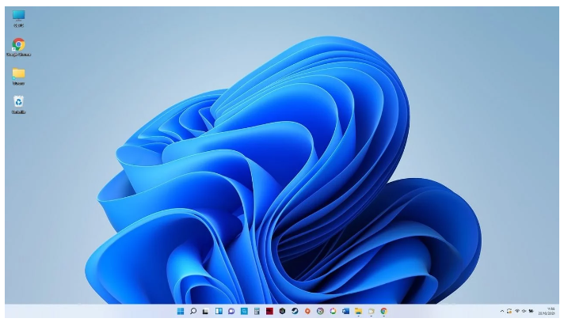
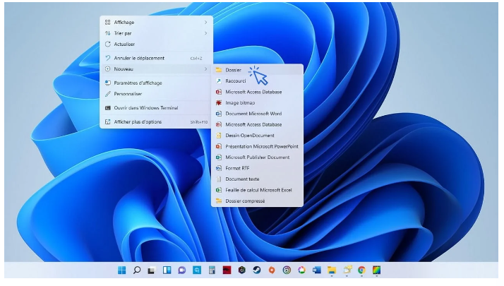
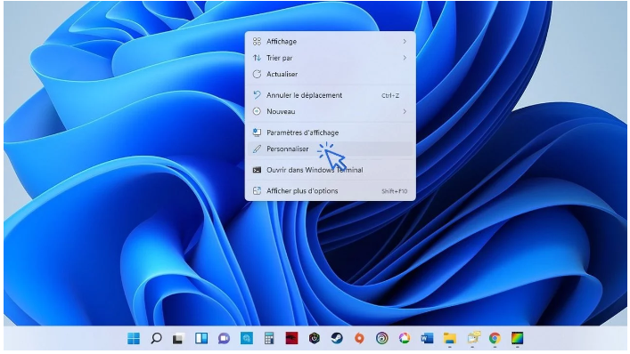
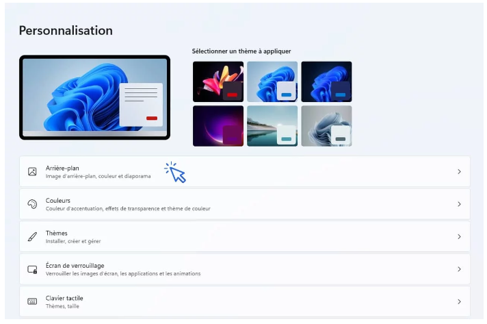
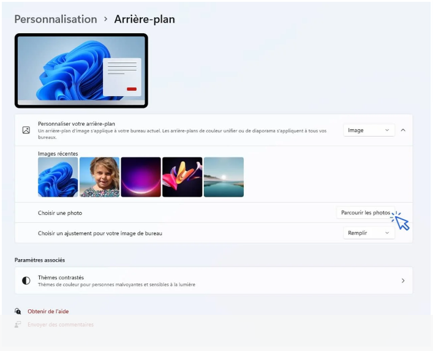

Le bureau est composé d’une image de fond également appelée « Arrière-plan », de la Corbeille, de l’Explorateur de fichier et de divers raccourcis (vers vos programmes, fichiers et dossiers). Il permet d’accéder rapidement à vos programmes préférés mais aussi à l’ensemble de votre ordinateur grâce à l’Explorateur (appelé aussi le « Poste de travail »)
Plusieurs icônes sont présentes sur le bureau : la Corbeille, l’Explorateur (également appelé le Poste de travail), et différents raccourcis vers vos programmes préférés. Pour ouvrir un programme, un fichier ou un dossier présent sur bureau, effectuez un double-clic sur son icône. Dans une leçon suivante nous verrons comment ajouter des raccourcis vers vos fichiers et dossiers préférés. Nous verrons aussi comment fonctionne la corbeille. Enfin, il est très pratique de créer des raccourcis, donc des icônes, vers ses programmes, fichiers ou dossiers préférés.
Rien de plus simple pour ajouter un nouveau dossier sur votre bureau ! Faites un clic droit sur le bureau, et sélectionnez Nouveau->Dossier. Il ne reste plus qu’à lui donner un nom et à le déplacer à l’endroit voulu.
Pour créer un nouveau dossier, sélectionnez Nouveau->Dossier :
Pour organiser vos icônes (raccourcis, fichiers ou dossiers présents sur le bureau), déplacez-les en maintenant le clic gauche de la souris. Relâchez à l’endroit voulu. L’icône déplacée sera automatiquement alignée « sur la grille invisible ». Créez des dossiers, et déplacez-y les icônes voulues en glissant l’icône sur le dossier, puis en relâchant la souris.
Pour supprimer une icône, effectuez un clic droit et sélectionnez « Supprimer » . Vous pouvez également sélectionner une icône en cliquant une fois dessus et en appuyant sur la touche « Suppr » de votre clavier.
Pour changer l’image de fond du bureau, faites un clic droit sur le bureau et sélectionnez « Personnaliser ». Cliquez ensuite sur « Parcourir », et sélectionnez l’image ou la photo désirée. Vous pouvez ensuite centrer ou étendre la nouvelle image en utilisant le menu déroulant « Choisir une taille ». Voyons cela en images.
Cliquez sur « Personnaliser » à l’aide du clic droit :
Puis cliquez sur « Arrière plan » :
Cliquez enfin sur « Parcourir les photos » pour sélectionner la photo de votre choix :
